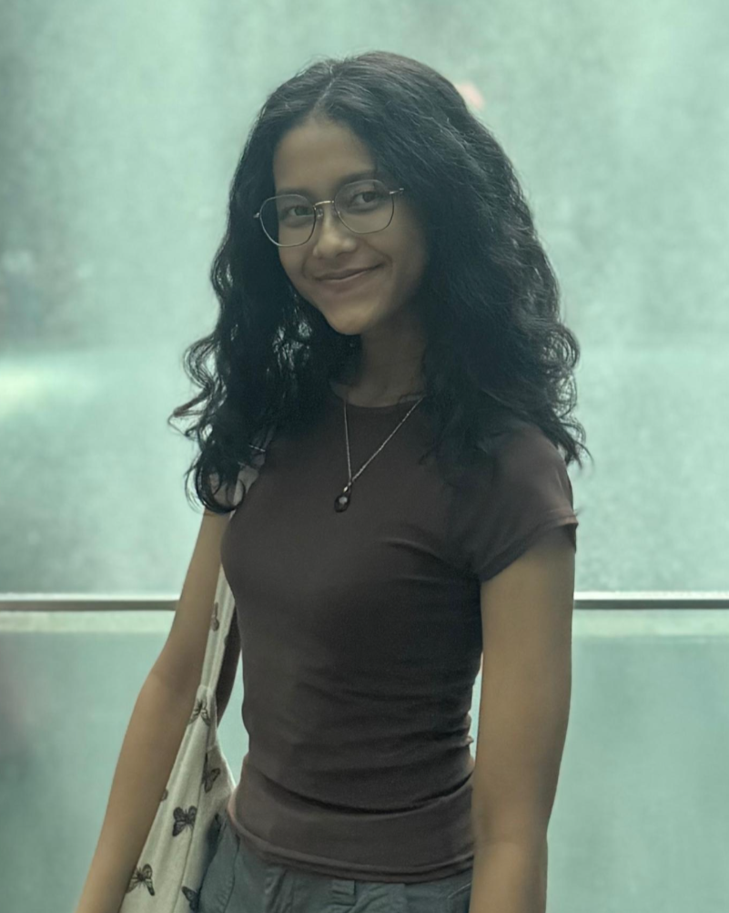
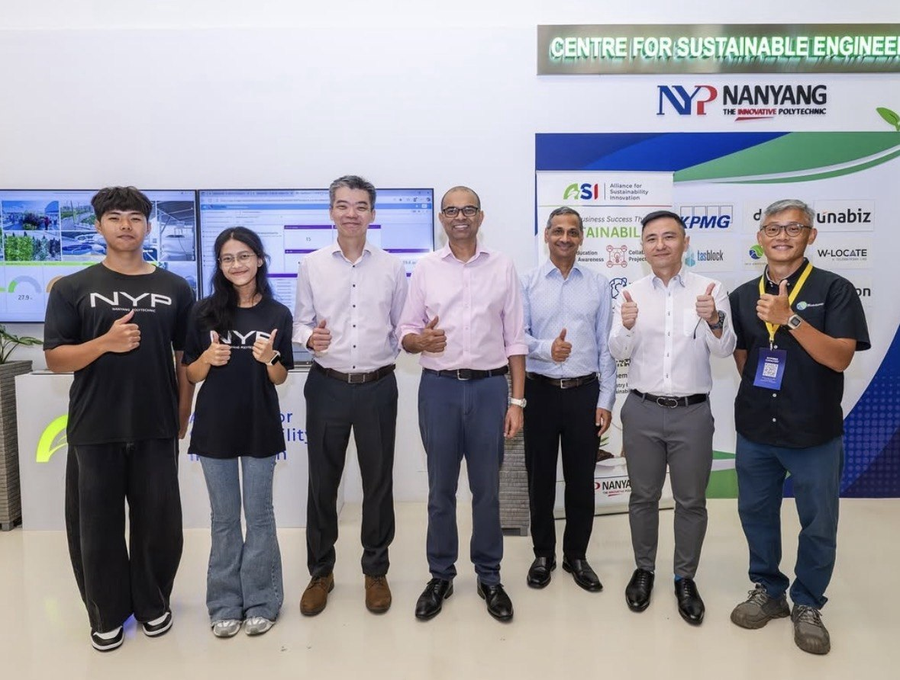
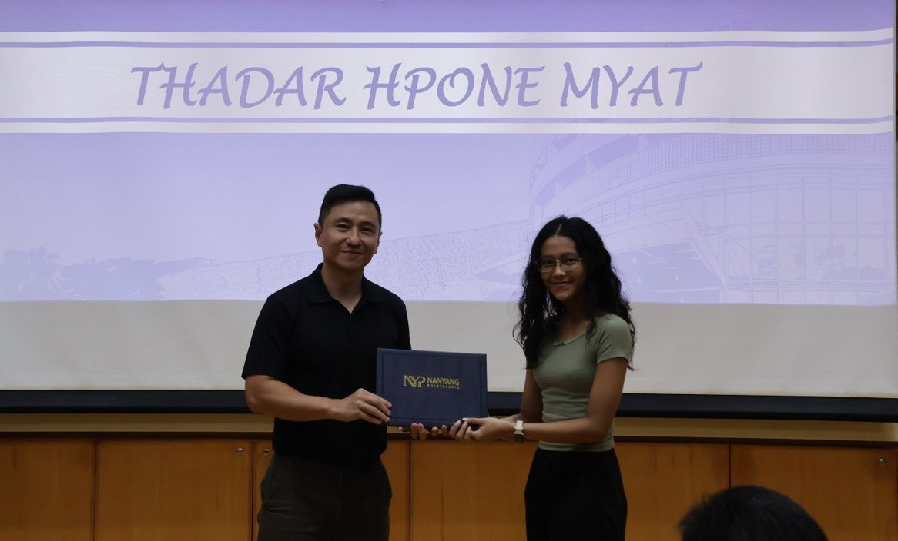
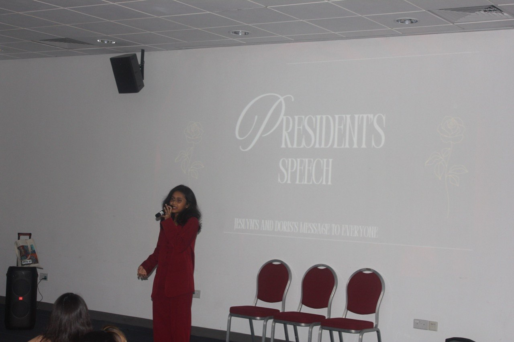

About Me
I'm Thadar Hpone Myat (Doris), a Year 3 Electronic & Computer Engineering student at Nanyang Polytechnic with a strong interest in embedded systems, IoT, automation, and hardware design.
Throughout my diploma, I have maintained a 4.0 GPA and been placed on the Director's List for four consecutive semesters. Beyond academics, I currently serve as the President of SoundCard, where I've strengthened my leadership, teamwork, and event management skills.
Outside of engineering, I've been actively involved in tutoring and mentoring, currently working as a private home tutor for primary, secondary, and GCSE "O"-Level students, where I've strengthened my communication, patience, and adaptability by tailoring lessons to different learning styles.
My engineering journey has given me opportunities to work on real-world projects, compete in a national hackathon and international engineering competitions, and present engineering innovations to Singapore's Senior Minister of State for Education. These experiences have strengthened my confidence in communicating technical ideas and collaborating with diverse teams.
I'm detail-oriented, adaptable, and I enjoy building practical solutions that combine hardware and software. I'm always eager to explore new technologies, take on meaningful challenges, and continue growing as an engineer.

Beyond Engineering
Music 🎶
President of SoundCard and enjoy performing with the club.
Crochet 🧶
A relaxing hobby that helps me unwind and stay patient.
Origami 🦢
A hobby that reflects my appreciation for precision and attention to detail.
Movies & Reading 🎬
I enjoy stories that spark creativity and inspiration.
What people say

With Senior Minister of State for Education in 2025

Director's List

SoundCard President